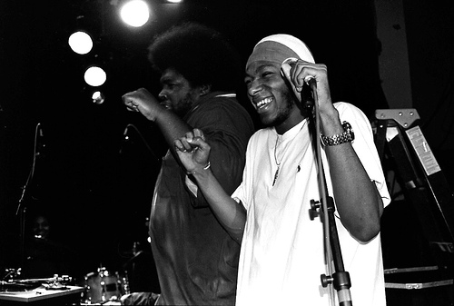

Yasiin Bey, aka Mos Def, is coming to the House of Blues Foundation Room on May 1, 2018 for a special set. Yasiin will be backed by the world renowned Legendary Roots Crew band from Philadelphia.
The House of Blues Foundation Room is an intimate venue designed for special musical sets, such as this event.
About Yasiin Bey: Born Dante Terrell Smith; December 11, 1973), best known by his stage name Mos Def (/ˈmoʊs ˈdɛf/), is an American hip hop recording artist, actor and activist from Brooklyn, New York City, New York. Best known for his music, Mos Def embarked on his hip hop career in 1994, alongside his siblings in the short-lived rap group Urban Thermo Dynamics (UTD), after which he appeared on albums by Da Bush Babees and De La Soul. He subsequently formed the duo Black Star, alongside fellow Brooklyn-based rapper Talib Kweli, and they released their eponymous debut album in 1998. He was featured on the roster of Rawkus Records and in 1999 released his solo debut, Black on Both Sides. His debut was followed by The New Danger (2004), True Magic (2006) and The Ecstatic (2009).[1] The editors at About.com listed him as the 14th greatest emcee of all time on their "50 greatest MC's of our time" list.[2] Prior to his career in music, Mos Def first entered public life as a child actor, having played roles in television movies, sitcoms, and theater. Since the early 2000s, Mos Def has been well known for his roles in films such as Something the Lord Made, Next Day Air, The Hitchhiker's Guide to the Galaxy, 16 Blocks, Be Kind Rewind, The Italian Job, Bamboozled and Brown Sugar, as well as for his portrayal of Brother Sam in the Showtime drama series Dexter. He is also known as the host of Def Poetry Jam, which aired on HBO between 2002 and 2007. Mos Def has been vocal on several social and political causes, including police brutality, the idea of American exceptionalism, and the state of African Americans.